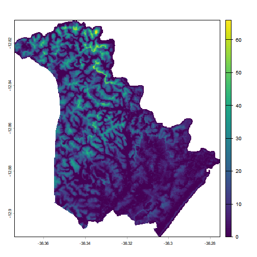
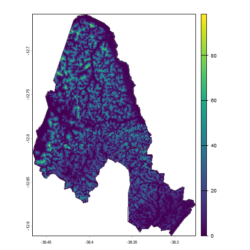
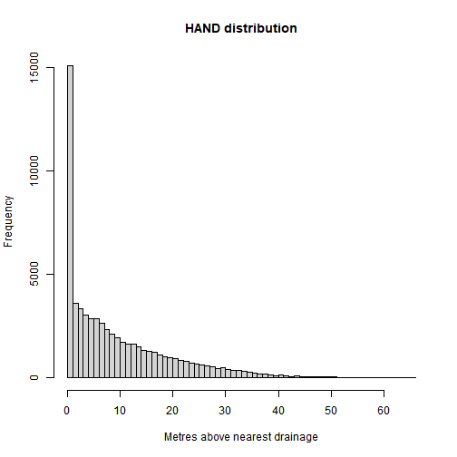
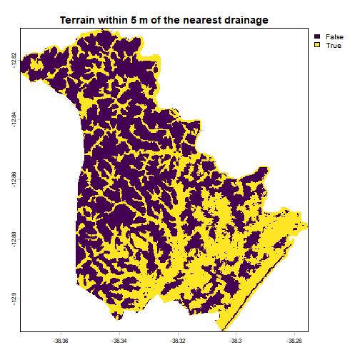
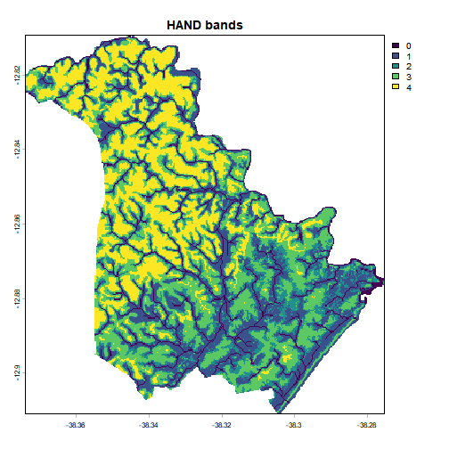
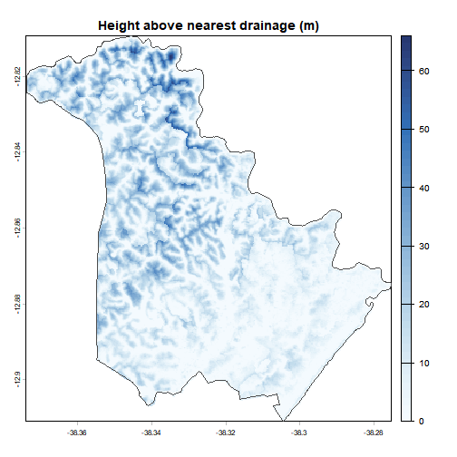
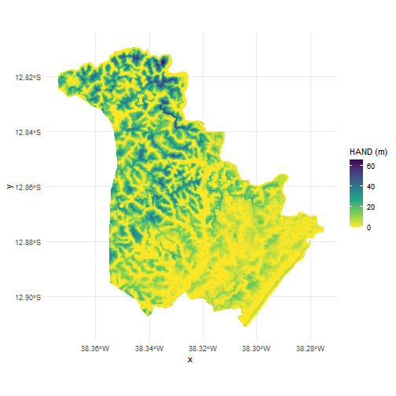

Flood susceptibility with GLO-30 HAND
Source:vignettes/articles/hand-flood-susceptibility.Rmd
hand-flood-susceptibility.RmdHAND (Height Above the Nearest Drainage), introduced by Nobre et al. (2011), measures, for every cell of a terrain model, how high that cell sits above the drainage channel it flows into. It is a relative elevation, not an absolute one: a cell 2 m above its channel is close to the water level whether it stands at 10 m or at 1000 m of altitude. That makes it one of the cheapest proxies for flood susceptibility available globally, as low HAND means the terrain is near the level the water reaches.
Nobre, A. D., Cuartas, L. A., Hodnett, M., Rennó, C. D., Rodrigues, G., Silveira, A., Waterloo, M., & Saleska, S. (2011). Height Above the Nearest Drainage – a hydrologically relevant new terrain model. Journal of Hydrology, 404(1–2), 13–29. https://doi.org/10.1016/j.jhydrol.2011.03.051
read_hand() returns the GLO-30 HAND raster, derived from
the Copernicus 30 m DEM, clipped to any polygon you give it.
Reading a raster for an area
read_hand() takes an sf object with POLYGON
or MULTIPOLYGON geometry. Any polygon works (a watershed, a
neighbourhood, a study area drawn by hand), but municipal boundaries are
the most common case. In the Brazilian case, geobr
provides the official IBGE ones:
# Lauro de Freitas (BA): small, coastal, and covered by a single tile
muni <- geobr::read_municipality(code_muni = 2919207, year = 2022,
simplified = FALSE, showProgress = FALSE)
hand <- read_hand(muni)
hand
#> class : SpatRaster
#> size : 366, 356, 1 (nrow, ncol, nlyr)
#> resolution : 0.0002777778, 0.0002777778 (x, y)
#> extent : -38.37403, -38.27514, -12.91097, -12.80931 (xmin, xmax, ymin, ymax)
#> coord. ref. : lon/lat WGS 84 (EPSG:4326)
#> source(s) : memory
#> varname : hand
#> name : hand
#> min value : 0
#> max value : 65.981606
plot(hand)
Nothing is downloaded in full. The GLO-30 HAND tiles are Cloud
Optimized GeoTIFFs, so only the blocks that intersect the polygon travel
over the network. read_hand() reports how many 1×1 degree
tiles the area spans, which is a good sanity check, given that a request
covering many tiles is a large request, even with COG.
Values are in metres above the nearest drainage, and
the raster is masked to the boundary, so cells outside the polygon are
NA.
Coordinate systems
The dataset is published in WGS84 (EPSG:4326), and that is what comes
back by default, whatever the CRS of place. The polygon is
reprojected internally for tile discovery, never the other way
round.
If you wish a projected CRS to get a raster in metres, use the
crs_output argument:
# UTM zone 24S, metric units
hand_utm <- read_hand(muni, crs_output = 31984)
res(hand_utm) # cell size in metres
#> [1] 30.44014 30.44014Reprojection uses bilinear resampling, which is the right choice for
a continuous surface. With crs_output you can do it once,
at reading time, rather than reprojecting derived products later.
Several polygons at once
When place has more than one feature, the features are
unioned and the raster is masked to the combined boundary:
# Lauro de Freitas and its neighbour Simoes Filho
neighbours <- geobr::read_municipality(code_muni = c(2919207, 2930709),
year = 2022, showProgress = FALSE)
hand_pair <- read_hand(neighbours)
plot(hand_pair)
plot(st_geometry(neighbours), add = TRUE, border = "grey30")
Reading the values
There is no universal cut-off that turns HAND into a flood map, and the sensible threshold depends on the basin, the channel network used to derive the product and the return period you have in mind. Values in the single digits of metres are the usual starting point, and the result should be treated as a screening layer.
To explore the values with dplyr, take them out of
the raster as a data frame, one row per cell in a column named
hand (na.rm = TRUE drops the cells outside the
boundary):
hand_values <- as.data.frame(hand, na.rm = TRUE)
hand_values |>
summarise(
cells = n(),
mean = mean(hand),
p05 = quantile(hand, 0.05),
median = median(hand),
p95 = quantile(hand, 0.95)
)
#> cells mean p05 median p95
#> 1 63390 9.654945 0 6.339997 30.78297
hist(hand_values$hand, breaks = 50,
main = "HAND distribution", xlab = "Metres above nearest drainage")
A screening mask is a single comparison:
lowland <- hand < 5
plot(lowland, main = "Terrain within 5 m of the nearest drainage")
# Share of the municipality below the threshold
hand_values |>
summarise(share_below_5m = mean(hand < 5))
#> share_below_5m
#> 1 0.4398959Classifying into bands is often more honest than a binary mask, because it keeps the gradient visible:
bands <- matrix(c(
0, 2, 1, # very low terrain, closest to the channel
2, 5, 2,
5, 15, 3,
15, Inf, 4 # well above the drainage
), ncol = 3, byrow = TRUE)
hand_class <- classify(hand, bands)
plot(hand_class, main = "HAND bands")
The same bands, counted on the data frame, give the share of the area in each:
hand_values |>
mutate(band = cut(hand, breaks = c(0, 2, 5, 15, Inf),
labels = c("0-2 m", "2-5 m", "5-15 m", "> 15 m"),
include.lowest = TRUE)) |>
count(band) |>
mutate(share = n / sum(n))
#> band n share
#> 1 0-2 m 18659 0.2943524
#> 2 2-5 m 9226 0.1455435
#> 3 5-15 m 19747 0.3115160
#> 4 > 15 m 15758 0.2485881Mapping
The raster is a plain SpatRaster, so every terra and
ggplot2 workflow applies. A palette that goes from wet to dry reads
better than the default:
plot(hand, col = hcl.colors(50, "Blues", rev = TRUE),
main = "Height above nearest drainage (m)")
plot(st_geometry(muni), add = TRUE, border = "grey30")
With ggplot2, convert to a data frame with the cell coordinates first:
library(ggplot2)
hand_df <- as.data.frame(hand, xy = TRUE)
ggplot(hand_df, aes(x, y, fill = hand)) +
geom_raster() +
scale_fill_viridis_c(name = "HAND (m)", direction = -1) +
coord_sf(crs = 4326) +
theme_minimal()
Exporting
writeRaster(hand, "hand.tif", overwrite = TRUE)
# Smaller file, same values, for sharing
writeRaster(hand, "hand_compressed.tif", overwrite = TRUE,
gdal = c("COMPRESS=DEFLATE", "PREDICTOR=3"))Caveats
- HAND is not a flood map. It knows nothing about rainfall, river discharge, drainage infrastructure, tides or dams, and a cell can be low above its channel and still rarely flood.
- The drainage network is modelled, derived from the DEM, so HAND inherits every error of the underlying elevation model. Dense urban areas and flat floodplains are where it struggles most.
- 30 m cells do not resolve individual buildings or street-level drainage.
- Coastal flooding driven by the sea, rather than by a channel, is outside what HAND represents.
Source
GLO-30 HAND, published on the AWS Open Data registry and derived from the Copernicus GLO-30 DEM. The HAND terrain descriptor itself is due to Nobre et al. (2011), cited at the top of this article. Municipality boundaries come from the IBGE mesh, through geobr.